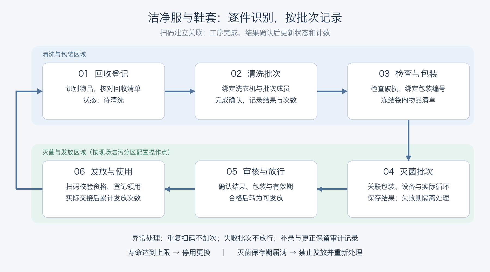

洁净服与鞋套追溯系统业务需求说明书
| 文档属性 | 内容 |
|---|---|
| 文档编号 | CG-BRD-001 |
| 版本 | V0.1，调研基线版 |
| 编制日期 | 2026-10-09 |
| 状态 | 待业务、QA、IT及验证人员评审；尚未批准为正式URS |
| 面向读者 | 车间负责人、操作人员、QA、验证人员、IT、项目负责人 |
| 配套文档 | 功能说明书-调研基线版 |
| 编制依据 | 用户已说明的业务目标及现场信息、现有方案、当前Demo源码与调研清单 |
| 后续维护 | 调研结果按本文件BR编号、TD编号补充；不把未决项默认视为客户同意 |
2026-10-19 补充确认：接收检查与完整记录
本节为用户本次确认后的增量。与下方 V0.1 历史基线冲突时，以本节为本次 Demo 口径；正式 URS 仍须企业评审批准。
| 编号 | 已确认业务要求 | 当前 Demo 表现 |
|---|---|---|
| BR-041 | 洗衣房接收后、清洗开始前，每批确认区域及洗衣机、干衣机清洁状态 | 每批登记；未清洁阻止开始，可记录复核原因和前后值 |
| BR-042 | 逐套衣帽、逐双鞋检查破损及鞋磨损 | 每个编号分别填写；保存破损结果、备注和编号 |
| BR-043 | 保存表单全部清洗、烘干、整理和结束清洁内容 | 衣服机洗；工作鞋手工刷洗/冲洗；洁净鞋套机洗；不适用路线显示 NA |
| BR-044 | 清洗完成后查询并打印填写结果及全部衣服/鞋编号 | 按批次或物品编号查找；打印包含接收成员、执行成员及破损待处置说明 |
| BR-045 | 按一件衣服或一双鞋查询、打印逐次灭菌记录 | 展示累计次序、日期、操作人、设备、结果、来源批次及依据 |
清洗字段包括：工作区域、洗衣机或清洗工位、干衣机、清洗前清洁状态、逐套/逐双检查、清洗数量、水源、清洁剂名称、用量确认、刷洗与冲洗确认（工作鞋）、清洗及烘干完成、折叠/摆放整齐、装袋（适用时）、清点数量、清洗后破损检查、结束后区域设备清洁状态、结果、完成时间、操作人、原始依据和异常说明。
破损后续处置未确认。 Demo 暂以“破损待处置”保留异常编号，不加入本次清洗执行成员，不自动报废、返修或放行。这是避免演示继续执行未知流程的临时行为，不是已批准的处置制度。后续需根据用户补充调整。
新建工作鞋、洁净鞋套按双管理。旧版“鞋套（只）”档案保留原单位，不自动合并成双。旧清洗记录缺失字段显示“未记录”；历史灭菌累计缺少逐次明细时明确提示，不补造日期或操作人。
效率按“共同现场操作时间＋记录时间”比较。逐件检查、整理和每批清洁工作在手工及系统方案中均保留。300 套示例采用共同现场工时 150 分钟，记录耗时手工/二维码/NFC/手机 OCR 分别为 150/40/30/75 分钟，总工时为 300/190/180/225 分钟。所有参数均待实测；设备运行、QA 审核及未知破损处置不纳入。原预算保留，新增功能的正式开发与验证增量待估算。
1. 文档目的与评审方式
本文用于回答“系统要解决什么问题、覆盖哪些业务、由谁操作、怎样判断需求满足”。它是需求沟通底稿，可在调研后转换为企业受控URS。开发实现细节见配套功能说明书。
建议评审时逐条阅读第7章BR需求表，并在“业务确认”栏填写：同意／调整／不适用／后续阶段，记录意见、确认人和日期。所有需求当前都尚未完成企业正式批准；表中的“确认目标”仅表示用户已明确提出该目标。
两份文档采用同一套编号：BR为业务需求、F为功能模块、AC为建议验收场景、TD为本次待决事项。原有调研问题Q01—Q33保持不变。原调研资料中的URS-01—URS-09是概括性示例，不与本文件BR编号混用；正式URS编号由企业受控文档程序确定。
2. 业务背景、问题和目标
目前约100多件洁净服、洁净鞋套，清洗频繁，清洗、灭菌和发放需要人工填写记录，存在工作量大、漏记、错记及事后补记困难等问题。已有二维码，希望通过手持设备和H5界面识别单件，自动形成处理历史及累计次数。
业务目标：减少逐件重复抄写和人工累计；追溯每件物品及其所属处理批次；按经批准规则预警和阻断不合格发放；保留更正证据；支持车间、批次、年份统计和检查；正式系统支持GMP计算机化系统验证及受控运行。
“自动记录”的边界：识别、关联、计算和校验自动完成；现场装载、工序实际完成、原始结果核对、包装检查和交接仍需人员履责。只有设备接口确实可用且经过验证时，才能减少对应的手工确认。扫描到二维码不证明已经清洗或灭菌合格。
建议上线后评价指标，数值由调研确定：每批记录耗时、每件识别耗时、台账缺项率、实物与系统差异、重复记录次数、异常闭环时间和追溯查询耗时。不在未测量现状时承诺节省百分比。
3. 已知事实、建议与待确认信息
3.1 用户已确认的前提
- 行业为制药，使用场景为GMP车间、内部使用。
- 管理对象为洁净服与洁净鞋套，共100多件，已有二维码。
- 需要逐件累计清洗、灭菌、发放次数，展示使用年限、处理时间、到期时间及状态。
- 需要预警、强制更换提示、追溯和报表导出，支持按车间、批次、年份统计。
- 计划采购手持扫码设备，业务界面希望采用H5。
- 当前先交付无后台数据库的可点击Demo，允许新增假数据；后续正式系统需要支持系统验证。
3.2 当前建议，尚待现场批准
- 单厂区先落地，复用衣物二维码，优先借测带屏安卓PDA。
- 按批次登记共同信息，记录实际成员，完成工序后逐件累计。
- 如封包后不能读取衣物码，增加外包装码并绑定袋内清单。
- 一期在线操作，工序结果人工核对并关联设备原始记录；自动设备接口单独评估。
- 处理结果确认与质量放行分开；Demo采用操作员处理、QA放行。
- 失败的完整循环仍保留物理处理次数，中止循环单独评估。
“内部使用”不等于已确认洗涤、灭菌全部在内部执行；系统部署方式、区域划分、实际岗位、服装路线、灭菌方式、鞋套单位、现场二维码格式和阈值均待调研。
3.3 当前Demo的定位
现有Demo是可操作的需求样例，不是生产系统。它支持新增物品、模拟扫码、批次、封包、放行、发放回收、预警、模拟审计和CSV导出；没有真实身份认证、电子签名、服务端数据库、设备接口、可信时间源或防篡改审计。
其中80次预警、100次更换、730天寿命、7天灭菌保存期仅是示例。不能作为行业标准、采购参数或现场SOP。
4. 范围与边界
4.1 一期建议范围
物品档案与初始基线、二维码识别、回收、清洗批次、检查包装、灭菌批次、审核放行、发放、累计次数、生命周期规则、异常隔离及报废、更正审批、单件和批次追溯、台账及统计导出、账号权限、审计追踪、记录保留、备份恢复与验证支持。
采购批次、洗涤批次、灭菌批次分别管理。生产批次是否关联、如何关联，需另行确认，不能把“按批次统计”直接理解为已经覆盖生产批次追溯。
4.2 有条件纳入
电子签名的触发点与形式、无需灭菌路线、发放次数上限、部分批次放行、原始记录文件上传、标签打印、委外交接和人员主数据接口，按调研结论确认一期具体范围。正式质量记录所需的控制不能仅以Demo未实现为由排除。
4.3 暂不包含在基础估算中
RFID、自动发衣柜、门禁联动、多厂区、离线审批及发放、设备自动控制、PLC改造、复杂MES/ERP双向集成、企业CA/PKI建设、灭菌工艺和服装材料本身的确认研究。新增时须评估范围、风险、验证和费用。
5. 术语及管理对象
| 名称 | 本项目定义 | 待确认边界 |
|---|---|---|
| 物品 | 独立累计寿命并追溯的一件服装或一个鞋套管理单位 | 鞋套按只或双，套装能否拆分 |
| 物品编号 | 物品全生命周期稳定标识 | 现有码是否可直接作为业务编号 |
| 标签编码 | 读取二维码得到并映射到物品的编码 | 与物品编号可不同，换标不能清零 |
| 包装 | 封包后的一组物品及外包装唯一号 | 是否一袋一件、能否混包 |
| 工序批次 | 一次明确的清洗或灭菌处理及其实际成员 | 设备循环与系统批次是否一一对应 |
| 发放单 | 一次真实交接及对应物品、领用人、车间 | 按人/车间/班次交接 |
| 处理件次 | 一个物品参加一次实际处理记一个件次 | 失败和中止计入规则 |
| QA放行 | 指定质量岗位依据记录作出的使用批准 | 审核人、签名和独立性要求 |
| 寿命到期 | 达到批准的次数、时间或其他强制条件 | 是否允许最后一次使用 |
| 保存期到期 | 本次清洁/灭菌后允许存放时限届满 | 起算点、储存及包装条件 |
| 更正 | 保留原记录及理由，通过批准修正业务信息 | 不能用删除记录抹掉真实暴露 |
发放次数不等于实际穿用次数、进入洁净区次数或穿用时长。若要这些指标，应增加真实采集环节。
6. 目标流程与岗位职责
6.1 总体流程示意

此图表示建议的含灭菌路线，不是厂区物理布局；图中共用阶段背景不表示人员、设备可以跨越洁污区。正式路线以Q01—Q03、Q08调研为准。
| 阶段 | 业务输入与操作 | 输出和控制 |
|---|---|---|
| 建档/上线 | 登记新物品或受控导入旧物品基线，绑定既有二维码 | 唯一档案，历史可信度和规则依据；未知不默认0 |
| 回收 | 核对实物与交接、记录回收及包装状态 | 待清洗或按SOP进入异常评估；保留原交接 |
| 清洗 | 确认设备、批次成员及开始/完成，记录结果 | 按实际循环累计；不合格隔离，不自动转合格 |
| 检查包装 | 检查外观/洁净情况，绑定并冻结包内清单 | 形成可追溯包装；不合格退出正常路线 |
| 灭菌 | 扫包装码，确认实际装载，记录实际循环和结果 | 记录次数、时间、原始依据；合格进入待放行 |
| 审核放行 | 按规定核对结果、证据、包装和有效期 | 通过后可发放；不通过时明确隔离或处置 |
| 发放 | 识别物品/包装，校验资格，记录真实接收对象 | 实际交接完成累计发放次数，保留发放时车间 |
| 异常/报废 | 评估过期、破损、失败、到限等情况 | 重处理或报废；不清空已有物理处理历史 |
6.2 建议角色矩阵
| 角色 | 业务职责 | 权限边界 |
|---|---|---|
| 操作员 | 扫码、实际工序登记、检查包装、发放回收、申请更正 | 不自行批准自己提交的受控审核，不直接改总次数 |
| QA/授权审核人 | 审核放行、更正批准、异常处置、规则批准、审计复核 | 是否必须独立于操作人按企业SOP确定，系统支持强制隔离职责 |
| 主数据/业务管理员 | 维护物品、编码和配置，发起规则变更 | 技术管理权限不自动附带业务放行权 |
| IT管理员 | 账号授权实施、环境、备份、恢复和故障处理 | 特权访问受控，不作为消除业务历史的途径 |
| 查询/审计人员 | 按授权查看履历、报表、证据和审计 | 只读，数据范围和导出权限受控 |
| 业务及验证负责人 | 批准需求、参与验收、培训及切换 | 质量体系批准不能由供应商代替 |
Demo只有操作员、QA和管理员三个可切换的模拟身份；正式矩阵不能照搬为“下拉框切换角色”。
7. 业务需求清单与覆盖核对
来源标记：“目标”＝用户明确目标；“补充”＝为实现流程和GMP受控运行提出的建议；“条件”＝须调研确定范围。Demo标记仅表示演示覆盖，不代表正式实现或验证通过。业务确认栏预留供客户逐条评审。
| 需求ID | 来源 | 业务需求与期望结果 | Demo覆盖 | 验收场景 | 业务确认 |
|---|---|---|---|---|---|
| BR-001 | 目标 | 每件物品唯一档案，包含类型、尺码、车间、采购批次、投用日期；可查询使用时长 | 部分：新建和查询，字段未齐全 | AC-01 | 待评审 |
| BR-002 | 目标 | 复用现有二维码，通过实际手持设备准确识别，错误或未知编码明确提示 | 部分：输入和样例，未实机识别 | AC-02 | 待评审 |
| BR-003 | 补充 | 旧物品累计次数有来源、核对和批准；缺失历史标为未知并受控处置 | 未实现，只有样例基线 | AC-03 | 待评审 |
| BR-004 | 补充 | 换标、补标不改变物品身份和历史，旧标状态可追溯 | 未实现 | AC-04 | 待评审 |
| BR-005 | 补充 | 扫码能区分档案查询、工序装载和交接，查询不增加次数 | 已演示 | AC-02 | 待评审 |
| BR-006 | 补充 | 工序批次登记共同信息、核对实际成员，执行开始后成员冻结 | 部分：有成员冻结，无完整装载复核 | AC-05 | 待评审 |
| BR-007 | 目标 | 清洗登记实际时间、设备、结果和成员，完成后自动累计洗涤次数 | 部分：时间用点击时刻，未接设备 | AC-06 | 待评审 |
| BR-008 | 补充 | 检查与包装绑定，外包装扫码可追到每件；拆包重包保留历史 | 部分：封包及整包拆包 | AC-07 | 待评审 |
| BR-009 | 目标 | 灭菌登记实际循环、时间、结果和证据，完成后逐件累计 | 部分：模拟记录编号，无工艺参数接口 | AC-08 | 待评审 |
| BR-010 | 补充 | 处理结果与审核放行分开，未审核物品不可发放 | 已演示，无正式签名 | AC-09 | 待评审 |
| BR-011 | 目标 | 按真实交接登记领用人、车间、时间，累计发放次数 | 已演示基本交接 | AC-10 | 待评审 |
| BR-012 | 补充 | 发放后回收、不使用退回、封包异常等有明确路线和记录 | 部分：统一整包回收待清洗 | AC-11 | 待评审 |
| BR-013 | 目标 | 清洗、灭菌、发放分别计数，可由明细及初始基线核对 | 部分：直接累计和新事件报表，无事件重建 | AC-06、AC-08、AC-10 | 待评审 |
| BR-014 | 补充 | 重复扫码、重复提交和网络重试不重复计次；同日真实重处理不能被误去重 | 部分：单浏览器去重，无并发服务端 | AC-12 | 待评审 |
| BR-015 | 补充 | 失败、重处理、中止有记录；物理暴露与成功次数分开 | 部分：完整失败计次，中止未实现 | AC-13 | 待评审 |
| BR-016 | 目标 | 显示使用时长、寿命到期，按次数和年限判定正常/预警/强制更换 | 部分：使用天数与示例阈值，无寿命到期日期展示 | AC-14 | 待评审 |
| BR-017 | 目标 | 显示清洗/灭菌时间及本次到期时间；保存期过期不等于寿命报废 | 部分：有最近时间和灭菌保存到期 | AC-15 | 待评审 |
| BR-018 | 补充 | 业务状态、寿命状态、当前可发放资格分别展示并说明原因 | 已演示 | AC-14、AC-15 | 待评审 |
| BR-019 | 补充 | 不同类型/型号按批准规则管理预警、上限、有效期和生效版本 | 部分：全局示例规则即时修改，无审批 | AC-16 | 待评审 |
| BR-020 | 目标 | 预警明确提示，强制条件触发后禁止不合规继续处理或发放 | 部分：示例次数/年限/过期拦截 | AC-17 | 待评审 |
| BR-021 | 补充 | 异常隔离、评估、重处理、报废有原因、审批及闭环 | 部分：整包处置，无复杂部分放行 | AC-13、AC-18 | 待评审 |
| BR-022 | 目标 | 从单件查询全履历；从问题批次反查物品、发放对象及未发放库存 | 部分：单件及批次履历，反向定位未完整 | AC-19 | 待评审 |
| BR-023 | 目标 | 按车间、明确的批次类别、年份统计，区分件数/件次和历史车间 | 部分：车间、处理批次、年份新事件统计 | AC-20 | 待评审 |
| BR-024 | 目标 | 导出可核对的台账/统计，包含条件、口径、生成时间和人员 | 部分：CSV，未实现完整受控导出 | AC-21 | 待评审 |
| BR-025 | 补充 | 看板显示数量、待处理/待审核、到期和异常待办 | 部分：基本看板，无待办闭环/消息 | AC-17 | 待评审 |
| BR-026 | 补充 | 唯一账号、岗位权限、人员停用、会话及数据范围控制 | 未实现，仅模拟角色 | AC-22 | 待评审 |
| BR-027 | 条件 | 按质量要求设置电子签名、签名含义及独立审核，签名关联具体记录版本 | 未实现 | AC-23 | 待评审 |
| BR-028 | 补充 | 系统留存可审查的审计追踪，包括原值、新值、人员、时间和原因 | 部分：可修改的本地模拟日志 | AC-24 | 待评审 |
| BR-029 | 补充 | 受控补录/更正保留原记录、实际时间和录入时间，审核后生效 | 部分：仅车间更正，无工序补录 | AC-25 | 待评审 |
| BR-030 | 补充 | 业务时间、录入时间、审核时间独立，使用可信统一时间源和时区 | 未实现：当前使用浏览器时间 | AC-15、AC-25 | 待评审 |
| BR-031 | 补充 | 原始工序依据可关联和检索，证明与物品/批次对应且不被悄然替换 | 部分：只有模拟编号，无附件受控存储 | AC-26 | 待评审 |
| BR-032 | 补充 | 记录保留、归档、备份及可恢复，恢复后关联和权限完整 | 未实现 | AC-27 | 待评审 |
| BR-033 | 补充 | 网络或电源故障时明确未入账状态，应急记录恢复后受控核对补录 | 未实现：本地保存不代表离线同步 | AC-28 | 待评审 |
| BR-034 | 目标 | H5适配手持设备，能戴手套操作，识码/提示/按钮满足现场效率 | 部分：响应式及键盘输入，未实机验收 | AC-29 | 待评审 |
| BR-035 | 条件 | 明确扫码、打印和设备原始记录的接入方式及异常责任 | 未实现真实接口 | AC-26、AC-29 | 待评审 |
| BR-036 | 补充 | 上线导入核对、并行试用及受控切换，保护历史资料 | 未实现 | AC-03、AC-30 | 待评审 |
| BR-037 | 目标 | 正式系统支持风险导向验证，需求、设计、测试和偏差可追溯 | 已展示文档清单，未做正式验证 | AC-30 | 待评审 |
| BR-038 | 补充 | 程序、规则、设备及浏览器版本变更需评估、批准和必要回归 | 未实现 | AC-16、AC-30 | 待评审 |
| BR-039 | 补充 | 在确认的并发和数据量下稳定工作，性能和可用性有验收标准 | 未执行正式性能测试 | AC-29 | 待评审 |
| BR-040 | 补充 | 形成操作、权限、审计复核、恢复、异常和培训流程，质量批准后替代纸质记录 | 未实现受控运行 | AC-27、AC-28、AC-30 | 待评审 |
若评审发现遗漏，在最后追加新BR编号，不重编号已经引用的需求；删除范围时保留编号和排除理由。
8. 关键业务规则
8.1 次数与批次
- 物品扫描加入批次时不加次数，工序实际发生并确认后才记对应事件。
- 一批20件各处理一次，形成20个处理件次；共同参数记录一次，逐件可回溯。
- 重复识别同一成员不重复加入；查询、盘点和补打标签不计处理次数。
- 完整失败循环仍可能消耗寿命，应保存物理暴露；合格次数和可放行资格另行判断。
- 中止循环先保存事实并隔离，按批准规则评估寿命扣减，不能默认0或1。
- 真实重洗/重灭菌使用新事件，不因“同一天”“同一件”而被去重。
- 已真实发生的处理，不能通过撤销单据抹掉；误登记通过受控更正调整有效统计口径。
8.2 寿命、保存期及状态
需同时管理业务状态、寿命状态、使用资格。寿命正常不能证明本次灭菌仍有效；本次保存期有效也不能覆盖已达寿命上限、破损或隔离。
显示至少包括：投用日期及起算依据、已用时长、最近实际清洗/灭菌时间、本次保存到期、寿命到期或剩余条件、当前三个累计次数及异常原因。若缺少可信起算信息，显示未知而非虚构日期。
寿命上限来源于服装/鞋套型号、材质、适用工艺和经批准依据。发放次数是否也构成寿命限制按SOP确认，不能因为有发放计数就默认有强制发放上限。
本次灭菌到期通常基于经批准起算点与保存时长；晚审核和晚补录不得自动延期。清洗后等待时限、开包和储存异常失效按现场要求配置。恢复有效资格必须完成规定处理，不允许直接手改日期绕过。
8.3 包装及交接
封包前绑定每件与包装外码；封包成员冻结。拆包和重包形成新的有效关联，历史仍可查。不能为了识别标签破坏无菌屏障。
若封包一袋多件，发放应按完整包装交接；若业务允许拆分，需要受控开包/重新处理路线并重新判断剩余物品资格。不能扫描单件后假定袋内其他物品仍维持原无菌状态。
8.4 质量记录与补录
更正申请包括原记录、拟改值、理由、实际时间、录入时间、证据及审批信息。批准前不改有效业务值，批准时检查是否已被其他操作更新。改动可能影响已发放资格时，应生成复核/追溯待办。
任何“取消人工填写”的切换必须经过验证、SOP及质量批准。电子记录为主记录后，受控应急纸单及补录仍需明确责任。
9. 报表与业务数据口径
| 报表 | 用途与必要内容 | 筛选/汇总 |
|---|---|---|
| 物品档案台账 | 编号、类型、车间、投用、当前计数、三类状态、到期信息 | 类型、车间、采购批次、状态 |
| 清洗台账 | 实际批次/成员、设备、时间、结果、操作及原始依据 | 车间、实际年份、清洗批次 |
| 灭菌及放行台账 | 循环、成员/包装、时间、结果、审核、到期及处置 | 灭菌批次、设备、结果、年份 |
| 发放/回收台账 | 单据、人员、当时车间、时间、成员、退回原因 | 接收人、车间、年份，生产批次按确认范围 |
| 预警及更换清单 | 命中规则、剩余寿命/保存期、隔离和处置状态 | 责任车间、原因、临期窗口 |
| 单件履历/批次追溯 | 从来源到最终交接的关联及更正轨迹 | 物品、包装、处理批次，支持反查 |
| 年度统计 | 各工序件次、去重物品数、失败/重处理、报废 | 车间、物品类型、年份、批次类别 |
| 审计/更正清单 | 原值、新值、时间、原因、审批及复核 | 对象、操作人、日期、动作 |
业务年份按实际业务时间及约定时区计算；另保留录入日期。报表保留事件发生时的车间，不能因后续调拨或主档更正而无痕改写历史。对于本来记录错误的历史车间，由受控更正明确影响的事件版本。
导出格式当前Demo为CSV，正式是否需要原生Excel、PDF和固定签批版式待确认。原生Excel/PDF不是当前已实现能力。
10. 建议验收场景
以下为验收意图，不是已批准测试脚本或已执行的OQ/PQ。正式脚本需补充环境、测试数据、步骤、预期证据、执行人与复核签名。
| 场景ID | 输入/触发 | 应达到的业务结果 |
|---|---|---|
| AC-01 | 新建、重复编号、缺关键资料 | 正常建档；重号/必填缺失拒绝；旧物品不能冒充新购清零 |
| AC-02 | 现场码、未知码、查询码、连续扫码 | 准确识别或明确拒绝；查档不计次，错误不能静默落账 |
| AC-03 | 旧衣有证据、缺历史、迁移重复 | 可追踪批准基线；未知受控；导入核对无重复覆盖 |
| AC-04 | 补打/换标、扫描旧标 | 历史连续，旧标状态可查，不增加/减少物理次数 |
| AC-05 | 装载前差异、开始后换成员 | 差异处理后方可执行；冻结后禁止直接增删成员 |
| AC-06 | 20件清洗一次、未完成、真实二次清洗 | 完成后20件各加1，未完成不虚增；二次实际工序单独记次 |
| AC-07 | 一包多件、少扫一件、拆包重组 | 全成员绑定及核对；原包装失效；新旧链条完整 |
| AC-08 | 灭菌完整成功/失败、原始结果缺失 | 实际循环可查，结果独立；证据不足不可放行 |
| AC-09 | 操作员直接放行、QA审核、重复审核 | 未授权拒绝；合格审核生效一次，签名按批准要求保存 |
| AC-10 | 发放成功、重复提交、已发放再次提交 | 真实交接计1次；重试不重计，已发放不能冒充新交接 |
| AC-11 | 使用回收、未使用退回、破包 | 分别走批准路线，原发放保留，包装/有效期不错误沿用 |
| AC-12 | 两终端同时处理同一件，重复请求、同日重处理 | 无重复占用或计数；合法新循环不被拦掉 |
| AC-13 | 失败、中止、重处理 | 暴露和评估记录保留，未解决不得发放，重处理有新事件 |
| AC-14 | 预警前/等于预警、上限前/等于上限、年限届满 | 边界按批准规则；明确预警/更换原因与剩余条件 |
| AC-15 | 到期瞬间、晚审核、跨日/跨年、客户端改时间 | 到期拦截、不因审核/补录延期；可信时间决定资格 |
| AC-16 | 修改规则、在途批次、历史已放行物品 | 批准及影响评估后生效，保留原版本，不自动重写到期 |
| AC-17 | 预警、未放行、隔离、到限、过期 | 看板有明确原因；硬限制在实际提交时再次校验 |
| AC-18 | 同批部分异常/报废，其余待审核 | 每个成员状态清楚，已处置部分不污染其余成员的审查链 |
| AC-19 | 指定问题灭菌批次或单件编号 | 可找到全部成员、包装、发放对象和未发放库存 |
| AC-20 | 多车间、不同批次、跨年补录、主档调拨 | 件数/件次正确，业务年份与历史车间不失真 |
| AC-21 | 导出筛选报表及统计后回查明细 | 条件/人员/时间清楚，总数与明细一致；特殊字符安全 |
| AC-22 | 禁用账号、无权角色、越权接口、超时会话 | 服务端拒绝且可审计；不是仅隐藏前端按钮 |
| AC-23 | 审核签名、记录版本变化、冒用身份 | 身份、意图与记录版本绑定；更改内容后不得沿用原签名 |
| AC-24 | 业务操作/更正后试图删除或改审计 | 授权用户可审查，不可静默覆盖；审计复核可留痕 |
| AC-25 | 补录、原值已被改变、次数更正影响后续单据 | 原值和双时间保留；冲突拒绝；影响受控复核 |
| AC-26 | 证据替换、缺失文件、重复/错序设备记录 | 原始来源可检索，版本受控，异常不导致重复计次或误放行 |
| AC-27 | 数据库/附件/配置恢复和归档检索 | 完整恢复关联、权限、签名及审计；恢复时长和数据丢失满足批准目标 |
| AC-28 | 断网、停电、响应丢失、恢复后补录 | 未确认成功不能声称已入账，核对后恢复，不重复交接 |
| AC-29 | 实际PDA戴手套、网络切换、代表性并发和数据量 | 识别与操作可用；性能、续航及错误提示达到批准指标 |
| AC-30 | 正式验证、偏差、培训及上线申请 | 追溯覆盖关键需求，偏差关闭或批准残留风险，质量批准后切换 |
11. 待调研事项和决策台账
详细访谈问题见现场调研与系统验证清单（配套资料另行提供）。本节按会影响设计的决策汇总；当前均未确认，负责人为建议责任部门，不是已作个人承诺。
| 决策ID | 待定内容 | 对应调研问题 | 主要影响 | 建议确认人 | 当前结论/日期 |
|---|---|---|---|---|---|
| TD-01 | 厂区/路线/实际处理方，是否存在无需灭菌路线 | Q01、Q02 | 范围、状态路线、岗位 | 生产、QA | 待调研 |
| TD-02 | 鞋套按只/双、服装按件/套及拆分 | Q04 | 主档、计数、包装、报废 | 生产、QA | 待调研 |
| TD-03 | 二维码内容、唯一性、耐久性及换标规则 | Q05、Q06 | 解析、实机识别、标签历史 | IT、供应商、QA | 待调研 |
| TD-04 | 灭菌方式、循环、结果证据和中止规则 | Q03、Q11、Q15 | 事件、寿命、结果和验证 | 设备、QA | 待调研 |
| TD-05 | 包装结构、外码、打印、拆包/部分处理 | Q07、Q22、Q23 | 成员冻结、部分放行、交接 | 包装岗位、QA | 待调研 |
| TD-06 | 次数上限、寿命起算、最后一次使用、发放上限是否适用 | Q10、Q11 | 拦截边界和规则版本 | QA、服装供应商 | 待调研 |
| TD-07 | 保存期及清洗后等待时间、失效条件 | Q12、Q13 | 时间算法、资格、重处理 | QA | 待调研 |
| TD-08 | 领用对象、生产批次、退回和更正审批 | Q14、Q21、Q24 | 交接、审核、记录变更 | 生产、QA | 待调研 |
| TD-09 | 身份、独立复核、电子签名适用要求 | Q14、Q26 | 服务端权限、签名、会话 | QA、IT | 待调研 |
| TD-10 | PDA数量/机型、消毒准入、扫码和打印方式 | Q08、Q09、Q18、Q19 | 采购、H5适配、联调 | IT、生产、QA | 待调研 |
| TD-11 | 设备/平台接口开放、费用及责任 | Q15、Q16、Q29 | 接口范围和工作量 | 设备、IT、采购 | 待调研 |
| TD-12 | 网络、在线/应急策略、服务器、备份恢复目标 | Q17、Q27、Q32 | 部署、可用性和恢复验证 | IT、QA | 待调研 |
| TD-13 | 旧物品历史可信度、保留年限、迁移及归档 | Q20、Q25 | 基线和数据完整性 | QA、生产、IT | 待调研 |
| TD-14 | 报表版式、批次类型、统计及导出格式 | Q28 | 报表、验收样表 | 业务、QA | 待调研 |
| TD-15 | 验证分工、性能指标、升级和正式切换 | Q09、Q30、Q31、Q32 | 验证交付、工期和运营 | 项目负责人、QA、IT | 待调研 |
| TD-16 | 后续扩展与一期排除项 | Q33 | 范围、预算及接口预留 | 项目负责人 | 待调研 |
TD-01—TD-10中的关键工艺、规则及设备问题未关闭前，不应冻结对应详细设计；接口、基础设施和验证费用也需在固定报价前确认。
12. 上线和验收前提
正式上线至少需要：批准业务范围和关键规则；确认主数据及基线；确定岗位权限与电子记录责任；完成实际设备/网络试验；完成风险评估、验证计划、设计及追溯矩阵；执行批准范围内的IQ/OQ/PQ或企业等效验证；处理偏差；验证恢复与应急；完成SOP、培训和切换批准。
监管适用性由企业QA按产品、市场和质量体系确定。本文不替代法规适用性评估，不据此声称“已符合GMP”。服装、包装和灭菌工艺的确认与计算机化系统验证是不同的责任范围。
13. 实施沟通
建议按现场调研、需求评审、设计、开发、验证及受控切换的顺序推进。商务估算不在本次分享范围内。
14. 评审记录与后续修订
| 评审轮次 | 日期 | 参与部门/人员 | 结论 | 未决事项 | 批准证据 |
|---|---|---|---|---|---|
| 首轮业务沟通 | 待安排 | 生产、QA、IT、验证 | 待评审 | TD-01—TD-16 | 待填写 |
| 变更编号 | BR/TD编号 | 原要求 | 调研结果/调整 | 影响F/AC、工时及验证 | 确认人/日期 |
|---|---|---|---|---|---|
| 待填写 | 待填写 | 待填写 | 待填写 | 待填写 | 待填写 |
调研后先更新事实与决策，再同步业务需求、功能说明和验收对应关系；重大范围变化重新估算，不仅改界面。评审通过后形成新版本并保留本调研基线，未决项保留责任人与截止日期。
15. 参考资料
- 功能说明书-调研基线版：功能、数据、状态、接口和需求追溯。
- 演示使用说明：当前Demo真实功能与限制。
- 现场调研与系统验证清单（配套资料另行提供）：Q01—Q33访谈及验证准备。
- 前期方案分析（配套资料另行提供）、市场参考调研（配套资料另行提供）：背景参考，供应商能力不作为本系统已经实现的证明。